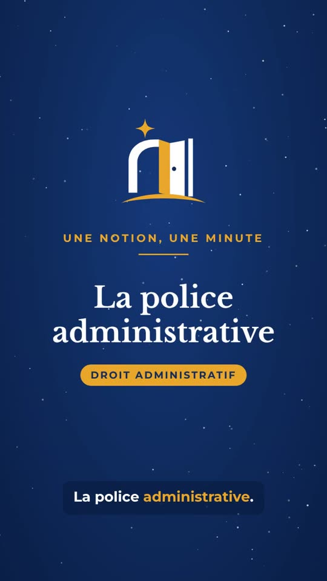
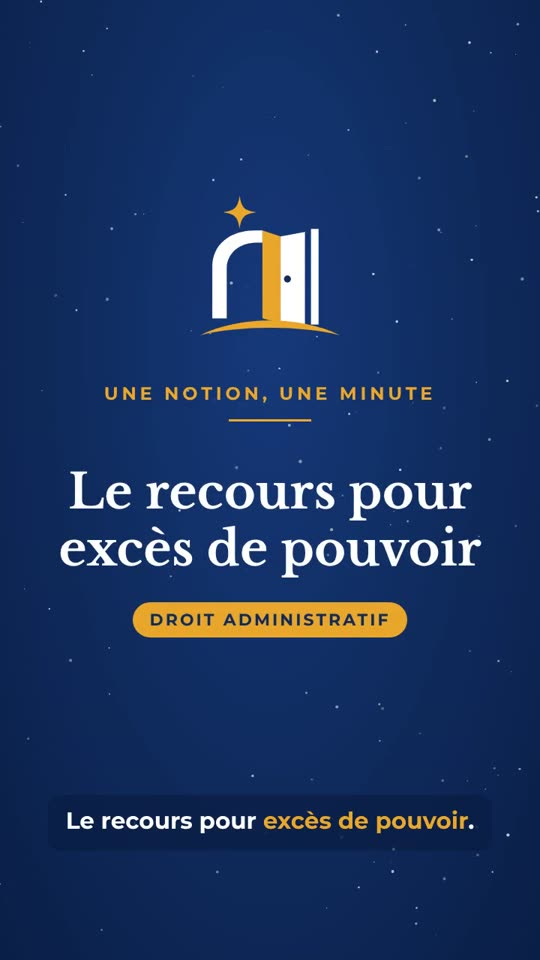
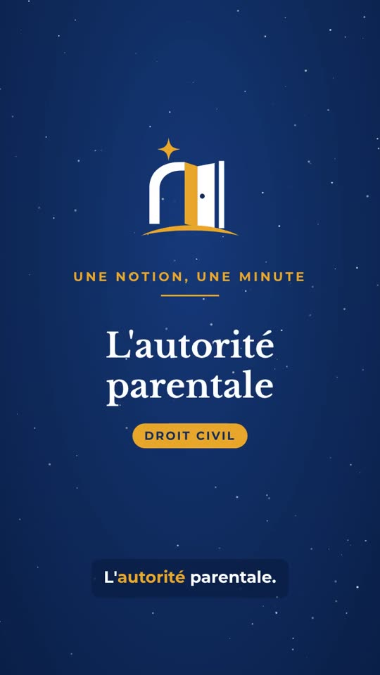
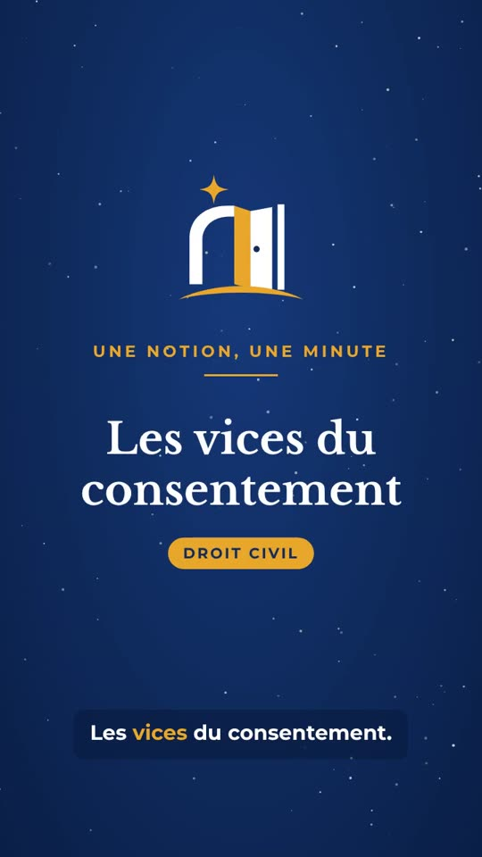
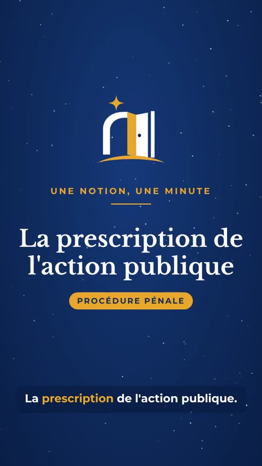
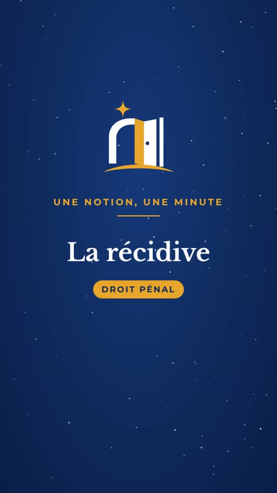
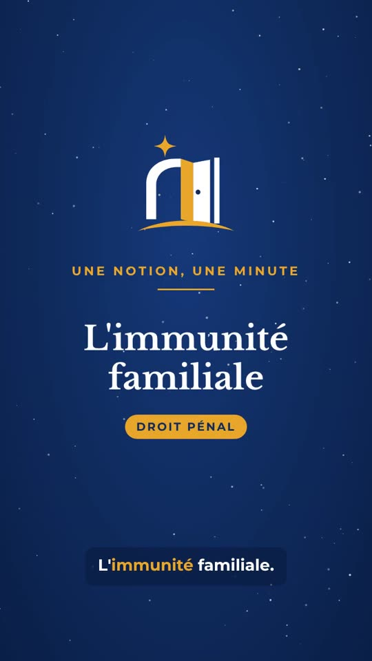
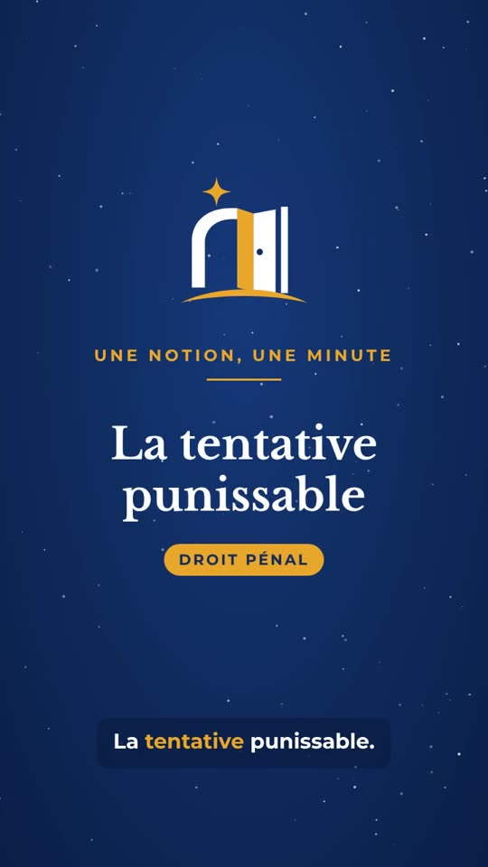

INFJ EPPJEJ
Les Annales des Anciens Sujets Corrigés INFJ, Édition 2027
Niveaux CS / CMS / CMExtrait gratuit à lireInclus dans l'espace VIP
10 000FCFA
Le concours EPPJEJ (Protection Judiciaire de l'Enfance et de la Jeunesse) accorde une place centrale aux droits de l'enfant. La connaissance des conventions internationales, de la loi sur la minorité et des mécanismes de protection est indispensable. La justice des mineurs et le rôle du juge des enfants sont des thèmes récurrents.
Les épreuves principales du concours EPPJEJ, protection judiciaire de l'enfance et de la jeunesse (INFJ), et nos fiches méthode pour les aborder.
Ajoutez un ouvrage ou un pack complet au panier, puis commandez en un message WhatsApp. La remise de 10 % s'applique dès 3 ouvrages.
Notre présentation, nos ouvrages et des sujets décryptés, en quelques minutes chacun.
Un concours ne se prépare pas au hasard. Les concours que nous préparons, notre accompagnement de la présélection à l'oral, nos ouvrages et notre exigence de rigueur.
D'autres notions expliquées en une minute, à regarder dans l'espace VIP de l'espace abonnés.

Réservée aux abonnés Une notion, une minuteLa police administrativeLa prévention des troubles à l'ordre public, police générale et polices spéciales, les limites contrôlées par le juge, un exemple et le piège de la police judiciaire.S'abonner pour la regarder
Réservée aux abonnés Une notion, une minuteLe recours pour excès de pouvoirLa loi organique relative au Conseil d'État : l'objet du recours, le recours préalable et les délais de deux mois, les cas d'ouverture, un exemple et le piège du recours parallèle.S'abonner pour la regarder Réservée aux abonnés Une notion, une minuteLes trois principes du service publicContinuité, égalité, mutabilité : les lois de Rolland, leurs conséquences au regard de la Constitution, un exemple et le piège de l'uniformité.S'abonner pour la regarder
Réservée aux abonnés Une notion, une minuteL'autorité parentaleLa loi relative à la minorité : la définition de l'article 3, le contenu de l'autorité parentale, qui l'exerce selon la situation des parents, un exemple et le piège de la délégation.S'abonner pour la regarder
Réservée aux abonnés Une notion, une minuteLes vices du consentementLes articles 1109 à 1117 du Code civil : l'erreur, le dol et la violence, un exemple, la sanction et le piège de la crainte révérentielle.S'abonner pour la regarder
Réservée aux abonnés Une notion, une minuteLa prescription de l'action publiqueL'article 12 du Code de procédure pénale : les trois délais, l'effet des actes de poursuite, les crimes imprescriptibles, un exemple et le piège de la prescription de la peine.S'abonner pour la regarder
Réservée aux abonnés Une notion, une minuteLa récidiveL'article 12 du Code pénal, les effets sur la peine selon les articles 122 et 123, le délai de cinq ans, les délits assimilés, un exemple et le piège du concours d'infractions.S'abonner pour la regarder
Réservée aux abonnés Une notion, une minuteL'immunité familialeL'article 103 du Code pénal : les trois cercles de proches, les limites de l'immunité, un exemple et le piège de la volonté de la victime.S'abonner pour la regarder
Réservée aux abonnés Une notion, une minuteLa tentative punissableL'article 28 du Code pénal : les deux conditions, un exemple, la tentative de crime et de délit, le but impossible et le piège des actes préparatoires.S'abonner pour la regarderJugez par vous-même de la qualité de nos corrections.
Quelles sont les juridictions qui ont en charge la justice pour mineurs ? Quelles sont les attributions du juge des enfants ?
Le système judiciaire ivoirien a institué trois juridictions spécialisées pour les mineurs en conflit avec la loi. Le juge des enfants, juridiction d'instruction spécialisée pour toutes les infractions commises par des mineurs, conformément à l'article 787 du CPP. Le Tribunal pour Enfants, juridiction collégiale compétente pour les délits et contraventions de cinquième classe. Le Tribunal Criminel pour Mineurs, juridiction exceptionnelle compétente pour juger les crimes commis par les mineurs âgés de seize ans révolus (article 817 CPP).
Le juge des enfants exerce une double fonction qui constitue une dérogation significative au principe de séparation des pouvoirs d'instruction et de jugement. En sa qualité de juge d'instruction spécialisé, il est saisi par réquisitoire introductif du procureur de la République pour procéder aux investigations sur les infractions imputées aux mineurs (articles 807 et suivants CPP). Parallèlement, il siège comme juge de jugement au sein du Tribunal pour Enfants où il préside les audiences.
Ce corrigé est un extrait de nos ouvrages. Obtenez la version complète avec tous les sujets.
5 sujet corrigés pour le concours EPPJEJ, à lire gratuitement en entier.
Dites-nous quel concours vous préparez et où vous en êtes : nous vous aidons à choisir les ouvrages adaptés, puis nous livrons partout en Côte d'Ivoire.